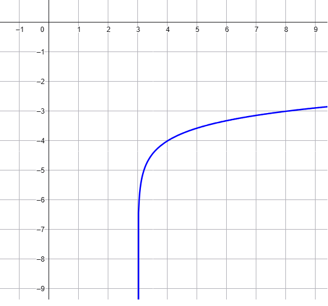
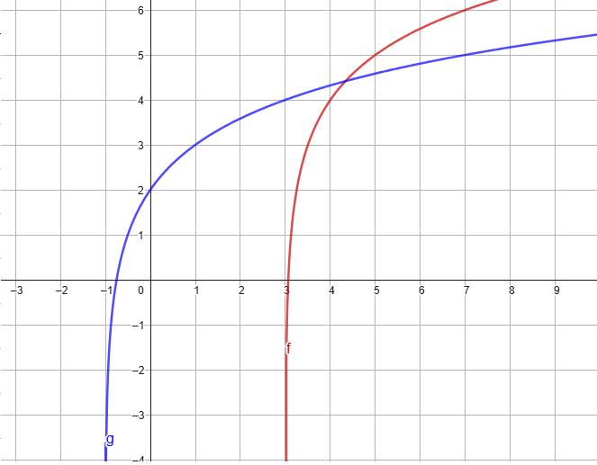

Soluzione
L'equazione è risolta per \(x= \dfrac{1}{243}\) e \(x = 27\).
Esercizio
\[
log(2x - 1) - log(-3x + 7) = -\dfrac{1}{2}
\]
Soluzione: \(\,\,\, x = \frac{7\sqrt{10}+10}{3\sqrt{10}+20}\).
Esercizio
Stabilire la legge della funzione logarimica rappresentata nel grafico

Soluzione:
La funzione è definita dalla legge \(f(x)=log(x - 3) - 4\)
Esercizio
Rappresentare i grafici delle funzioni
\[
f(x) = log_2(x - 3) + 4 \qquad g(x) = log_2(x + 1) + 2
\]
Stabilire la coordinata \(x\) del punto di intersezione tra i grafici di \(f\) e \(g\).
Soluzione:

La coordinata \(x\) del punto di intesezione tra i grafici è \(x = \dfrac{13}{3}\)